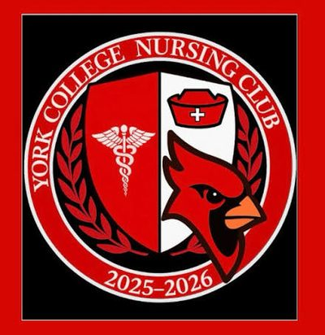

Faculty & Nursing Club Directory

Current Nursing Club officers and faculty advisor. Reach out to any officer with questions, corrections, or content to add to this site.
Note on the Advisory Board page
The official Advisory Board page has listed a stale officer roster (Nicele Arana et al.).
The roster below is the current, confirmed one from the Club itself.
Nursing Club Officers
| Role | Name |
|---|---|
| President | Nazia Hossain |
| Vice President | Oscar Leyva |
| Secretary | Sunny Sediqi |
| Treasurer | Stacy Hutchinson |
| Social Media Liaison | Maria Molina |
| Community Liaison | Shani Cameron |
| Financial Liaison | Palmer |
| Faculty Advisor | Dr. Margarett Alexandre |
Meetings
Science Building, Room 133.
Department Faculty
| Name | Title | |
|---|---|---|
| Dr. Renée Wright | Associate Professor, Chairperson | rwright@york.cuny.edu |
| Dr. Margaret Hickey | Assistant Professor, Undergraduate Program Director | mhickey@york.cuny.edu |
| Dr. Magalie Alcindor | Assistant Professor | malcindor@york.cuny.edu |
| Dr. Margarett Alexandre | Associate Professor (Nursing Club Faculty Advisor) | Malexandre1@york.cuny.edu |
| Dr. Jasmine Bratton-Robinson | Assistant Professor | jbrattonrobinson@york.cuny.edu |
| Dr. Patricia Burke | Associate Professor | Pburke1@york.cuny.edu |
| Dr. Vanessa Carew | Clinical Professor, Simulation Coordinator | vcarew@york.cuny.edu |
| Dr. Vivian Carrasquilla Lopez | Assistant Professor | vcarrasquillalopez@york.cuny.edu |
| Dr. Nadine Donahue | Associate Professor | ndonahue@york.cuny.edu |
| Dr. Valerie Kubanick | Assistant Professor | vkubanick@york.cuny.edu |
| Prof. Lydia Peal | Assistant Professor | fpeal@york.cuny.edu |
| Dr. Stephanie Store | Assistant Professor | sstore@york.cuny.edu |
Department Staff
| Name | Title | |
|---|---|---|
| Gwendolyn Branch | College Office Assistant | gbranch@york.cuny.edu |
| Janet Tyson | College Administrative Assistant | jtyson@york.cuny.edu |
Department Office
Science Building, Room SC-110 — (718) 262-2054